Runecrafting � Obtaining Talismans and Tiaras
Introduction
Talismans allow runecrafters to locate and gain access to Runecrafting altars through mysterious ruins. Even if a runecrafter memorises the location a mysterious ruin, the runecrafter will not be able to enter the ruin to get to the altar without a matching talisman. Each type of talisman gives you access to its matching Runecrafting altar. It is only at these altars that runes can be made.
After completing the Rune Mysteries, you will receive an air talisman as a reward.
Talismans
Below is a table of talismans and where you can obtain them.
Talisman |
Examples of where to get talisman |
| 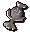 Air |
An air talisman is given to you during the Rune Mysteries. They are also dropped by goblins, wizards and creatures in the Abyss |
![[image]](../../img/main/kbase/items/talisman/blood_talisman.gif) Blood |
You find a blood talisman during Legacy of Seergaze. |
![[image]](../../img/main/kbase/items/talisman/body_talisman.gif) Body |
Dropped by guards, wizards, dark wizards, giants and creatures in the Abyss |
![[image]](../../img/main/kbase/items/talisman/chaos_talisman.gif) Chaos |
Dropped by hobgoblins, skeletons, ice warriors, shadow warriors, lesser demons, hill giants, fire giants and creatures in the Abyss |
| 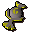 Cosmic |
Gift from Random Events. There is a rare chance you can get them from some high level monsters and creatures in the Abyss |
| 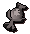 Death |
Obtained after completing Mourning's Ends Part II. Dropped by dark beast |
| 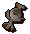 Earth |
Dropped by men, women, wizards, dark wizards, Al Kharid warriors, rogues, vampires, lesser demons, greater demons and creatures in the Abyss |
![[image]](../../img/main/kbase/items/talisman/elemental_talisman.gif) Elemental |
Dropped by monsters dwelling in the Abyss |
![[image]](../../img/main/kbase/items/talisman/fire_talisman.gif) Fire |
Dropped by guards, wizards, unarmed skeletons, dark wizards and creatures in the Abyss |
| 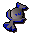 Law |
Dropped by battle tortoises, terrorbirds, ghouls, guards, paladins and creatures in the Abyss |
| 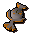 Mind |
Dropped by imps, wizards, dark wizards, Yanille tower guards, Colonel Radick and creatures in the Abyss |
![[image]](../../img/main/kbase/items/talisman/nature_talisman.gif) Nature |
Dropped by hobgoblins, jogres, moss giants, green dragons, zombies and creatures in the Abyss |
![[image]](../../img/main/kbase/items/talisman/water_talisman.gif) Water |
Dropped by wizards, giant frogs, dark wizards and creatures in the Abyss |
Talismans are also required when making Combination runes.
Tiaras
Tiaras perform the same function as talismans - they allow you to gain access to a Runecrafting altar. Tiaras have an advantage over talismans, in that you can wear tiaras on your head, freeing an extra space in your inventory. To make a tiara see the Crafting Guide.
Once you have crafted the tiara, you can enchant it to allow you to access the altar of your choice.
To enchant a tiara you must:
- Take your silver tiara to your chosen altar. You will also need the matching talisman to the altar.
- Use the tiara on the altar and your talisman will then disappear from your inventory and your tiara has now been enchanted.
Tiara |
Where To Craft |
| 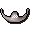 Air |
Craft at the air altar from an air talisman and plain tiara |
| 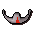 Blood |
Craft at the blood altar from a blood talisman and plain tiara |
![[image]](../../img/main/kbase/items/tiara/body_tiara.gif) Body |
Craft at the body altar from a body talisman and plain tiara |
![[image]](../../img/main/kbase/items/tiara/chaos_tiara.gif) Chaos |
Craft at the chaos altar from a chaos talisman and plain tiara |
![[image]](../../img/main/kbase/items/tiara/cosmic_tiara.gif) Cosmic |
Craft at the cosmic altar from a cosmic talisman and plain tiara |
![[image]](../../img/main/kbase/items/tiara/death_tiara.gif) Death |
Craft at the death altar from a death talisman and plain tiara |
![[image]](../../img/main/kbase/items/tiara/earth_tiara.gif) Earth |
Craft at the earth altar from an earth talisman and plain tiara |
| 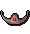 Fire |
Craft at the fire altar from a fire talisman and plain tiara |
| 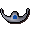 Law |
Craft at the law altar from a law talisman and plain tiara |
| 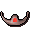 Mind |
Craft at the mind altar from a mind talisman and plain tiara |
![[image]](../../img/main/kbase/items/tiara/nature_tiara.gif) Nature |
Craft at the nature altar from a nature talisman and plain tiara |
![[image]](../../img/main/kbase/items/tiara/water_tiara.gif) Water |
Craft at the water altar from a water talisman and plain tiara |
Click here to view the Runecrafting FAQs

More articles in
Runecrafting
|
|
|
Further Help
Need more help? Come chat with us!
|
|